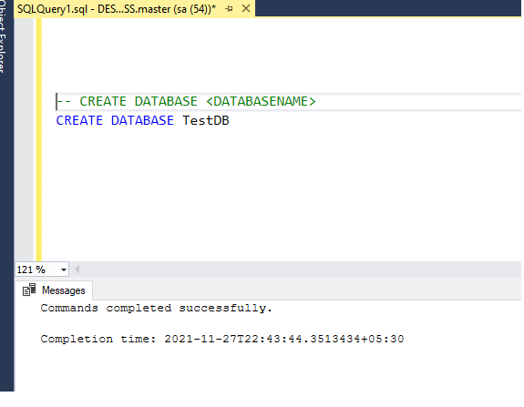
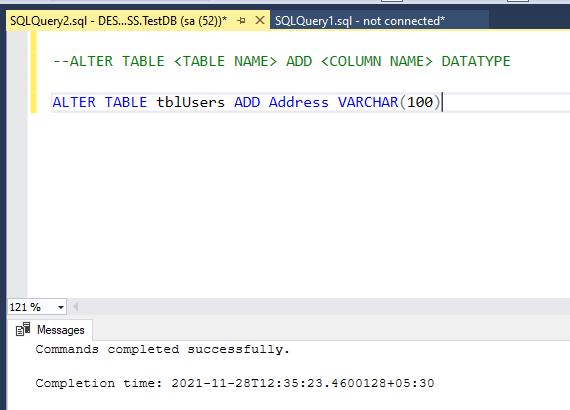
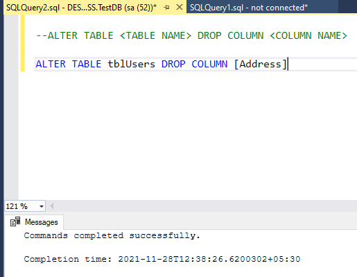
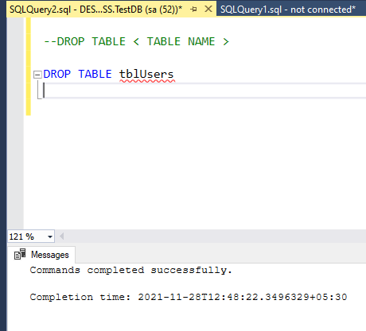

Discuss about SQL commands 
Posted date: 28th November 2021.
SQL Commands are used to perform actions on any RDBMS databases in order to perform CRUD operations.
C - Create
R - Retrieve
U - Update
D - Delete
The above CRUD operations falls under different types of SQL Commands, which we are going to discuss today.
Data Definition Language (DDL) :
The main purpose of this DDL command or operations are to modify the structure or table schema, which are CREATE, ALTER, DROP, TRUNCATE.
CREATE :
This create operation is used to create databases and tables.
Syntax :
CREATE DATABASE < DATABASENAME >

ALTER :
- Alter is a DDL command and is used to alter the table structures.
- Using alter we can drop table column and also we can add a new column to a table.
ALTER TABLE < TABLE NAME > ADD < COLUMN NAME > DATATYPE

ALTER TABLE < TABLE NAME > DROP COLUMN < COLUMN NAME >

DROP :
Drop command is used to drop the table.
Syntax :
DROP TABLE < TABLE NAME >

TRUNCATE :
TRUNCATE command is used to delete complete exisiting data in a table.
Syntax :
TRUNCATE TABLE < TABLE NAME >